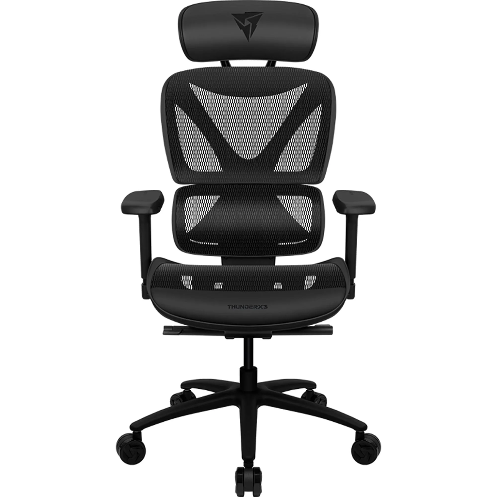
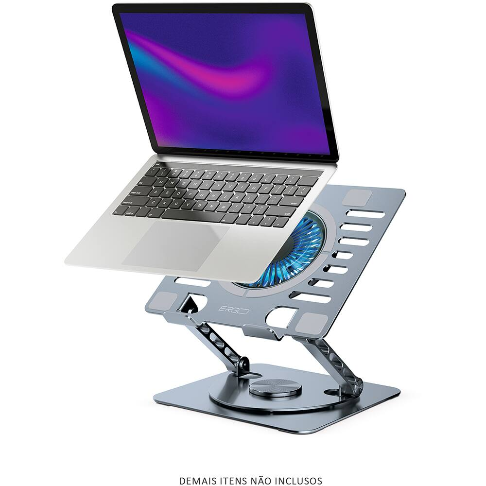
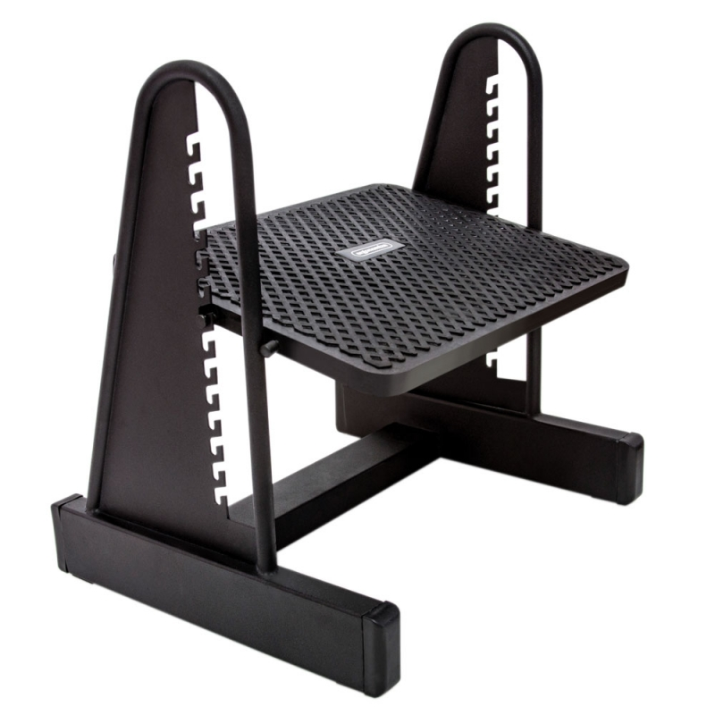
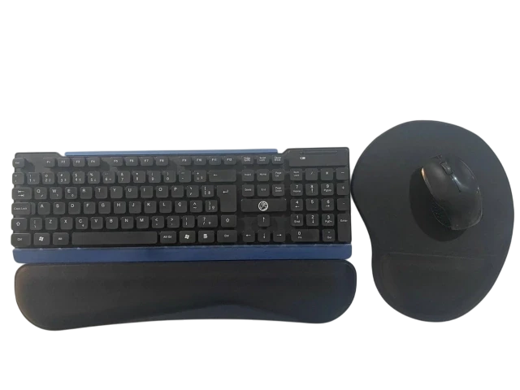

Preservando a integridade dos colaboradores.
Criado pelos discentes de fisioterapia, o Ergofisio é o seu espaço digital de pausas ativas, um projeto pensado para preservar a saúde física e mental dos profissionais da UNIFG. Encontre exercícios rápidos, orientações posturais e dicas de descompressão mental projetados para a sua rotina de trabalho. Cuide do seu bem-estar, onde quer que você esteja no campus.
Ergofisio
Saúde e Ergonomia no Trabalho
Conheça o Projeto Ergofisio
O Ergofisio é uma iniciativa dedicada à promoção da saúde, do bem-estar e da qualidade de vida de todos os colaboradores da UNIFG Piedade. Desenvolvido com dedicação pelos alunos da Unidade Curricular de Fisioterapia na Saúde Coletiva e do Trabalhador, o projeto nasceu da compreensão de que um ambiente educacional de excelência só se sustenta quando quem o constrói diariamente também é cuidado.
Sabemos que a rotina acadêmica exige muito do corpo e da mente independente do seu local de atuação, cada setor possui demandas ergonômicas específicas.
Por meio de uma plataforma digital acessível e intuitiva, o Ergofisio oferece uma curadoria de exercícios laborais, alongamentos práticos e técnicas de relaxamento mental. Nosso objetivo é atuar na prevenção de dores, na redução do estresse e na manutenção da integridade física e mental, garantindo que o cuidado com a saúde ocupacional seja uma prática diária, simples e acessível a todos que fazem a UNIFG Piedade acontecer.
Sua Dica de Ergonomia do Dia
Baseado no folder oficial do projeto, clique no cartão abaixo para revelar uma orientação ergonômica ou alongamento selecionado para hoje.
Qual será sua dica ergonômica para hoje?
Clique para virar o cartão e descobrir!
Aguardando Dica...
Carregando a dica oficial do dia...
Alongamentos
Rotina física preventiva para os colaboradores. Execute cada um dos 11 alongamentos ilustrados no panfleto físico.
Técnicas de Relaxamento
Práticas respiratórias simples para aliviar o estresse, melhorar a concentração e promover o bem-estar.
Técnica 1
Sente em posição ereta. Pode ser no chão ou em uma cadeira.
Puxe o ar pelo nariz, de forma lenta e profunda. Na hora de soltar, faça um biquinho com a boca, pois isso diminui o atrito do dente e da língua para a saída do ar e faz com que a respiração seja mais harmônica. Repita 10 vezes.
Técnica 2
Sente-se com as costas eretas ou deite. Coloque as mãos sobre a barriga.
Respire devagar, aumentando a barriga, contando até cinco. Dê uma pausa de dois segundos. Exale lentamente, contando até seis. Pratique esse padrão de 10 a 20 minutos por dia.
Técnica 3
Com a ajuda do dedo indicador tampe a narina esquerda e inspire pela outra narina (contando até cinco).
Na sequência, a narina que "puxou" o ar deve ser usada para "soltá-lo". Repita o procedimento cinco vezes.
Adaptações Ergonômicas Recomendadas
Modificações essenciais nas ferramentas e móveis do posto de trabalho para garantir seu conforto e integridade física.

Cadeira Ergonômica
O uso da cadeira ergonômica ajuda a reduzir a sobrecarga lombar durante a jornada laboral.

Suporte para Notebook
Ajustar a altura do monitor para ficar na linha dos olhos, e assim evitar a flexão da cervical e sobrecarga lombar.

Suporte para os Pés
Adicionar o apoio aos pés para garantir o retorno venoso, alinhamento adequado da coluna e quadril e evitar a compressão vascular.

Mouse Pad e Teclado Pad
Usar esses equipamentos evita a fadiga muscular e aumenta a estabilidade do punho.
Consequências da Falta de Ergonomia
A ausência de ajustes ergonômicos e pausas ativas pode causar lesões graves à saúde física e mental dos profissionais.
Lesões por Esforço Repetitivo (LER)
- Tendinites
- Bursites
- Síndrome do Túnel do Carpo
- Lombalgia e Cervicalgia
Problemas Circulatórios e de Visão
- Varizes
- Fadiga Visual
Transtornos Psicológicos Ocupacionais
- Ansiedade e Depressão
- Síndrome de Burnout
Ergonomia no Trabalho
Orientações posturais oficiais do panfleto de Fisioterapia para as tarefas mais comuns do seu dia a dia laboral e pessoal.
Postura Ergonômica Sentado
Correto
Coluna ereta, pernas e coxas a 90°, pés apoiados, tela na altura dos olhos.
Incorreto
Coluna curvada, pescoço flexionado olhando para baixo, bacia desalinhada.
Levantar Peso
Dobre os joelhos e use a força das pernas mantendo a coluna totalmente ereta e a carga próxima ao corpo.
Postura
Mantenha o alinhamento adequado dos ombros, pescoço e coluna nas atividades de pé.
Computador
Ajuste móveis e ferramentas ergonômicas (cadeira, monitor e suportes) de acordo com seu biotipo.
Direção
Mantenha braços e pernas levemente flexionados, quadris apoiados e encosto firme na coluna.